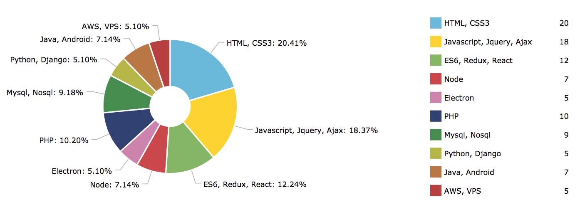
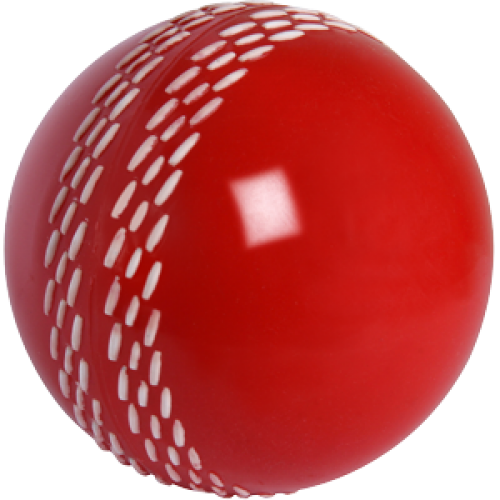

15+ Projects
5+ Exp
100+ Repos
Hello
I am a Geeky Web Ninja, Self taught, highly motivated developer with a focus on web technologies. I am more passionate about developing quality products, solve interesting problems & learning new technologies.
Contact
+91 7042836146
krishcdbry@gmail.com
krishcdbry.com | blog.thenodejs.com
Mohana Krishna Padda
Awards
PV WEB STAR
Development excellence, Code perfection, Team management, Innovation, productivity. NATIONAL LEVEL ETHICAL HACKING CHAMPIONSHIP
Won the championship in IIT Chennai, India. Conducted by - CYBERMANIA (Mumbai) INFOSYS STUDENT EXCELLENCE AWARD
In 2013, for securing 1st position in project expo. STUDENT OF THE YEAR
Got 10 achievements in various domains including project expo, code challenges inter-college competitions. INNOVATIVE ENGINEER
In 2012 & 13, Awarded by district collector (IAS Officer) Srikakulam.
Development excellence, Code perfection, Team management, Innovation, productivity. NATIONAL LEVEL ETHICAL HACKING CHAMPIONSHIP
Won the championship in IIT Chennai, India. Conducted by - CYBERMANIA (Mumbai) INFOSYS STUDENT EXCELLENCE AWARD
In 2013, for securing 1st position in project expo. STUDENT OF THE YEAR
Got 10 achievements in various domains including project expo, code challenges inter-college competitions. INNOVATIVE ENGINEER
In 2012 & 13, Awarded by district collector (IAS Officer) Srikakulam.
Education
JNTUK (AITAM), Sklm — B.Tech, COMPUTER SCIENCE & ENGINEERING
Passed with an Aggregate of 80.07 A Grade (Excellent)
Technical Head of Computer science society - Aitam
Infosys Student partner 2011-14 SSC (Bhashyam), Sklm - Maths, Science.
Passed with an Aggregate of 88.1
Passed with an Aggregate of 80.07 A Grade (Excellent)
Technical Head of Computer science society - Aitam
Infosys Student partner 2011-14 SSC (Bhashyam), Sklm - Maths, Science.
Passed with an Aggregate of 88.1
Activity
Stackoverflow : 1000+ Reps
(top 7% this year)
- JavaScript/JQuery : Top 10%
- Angular - Top 20%
ASK Ubuntu : 160 Reps
http://stackoverflow.com/users/3800824/krishcdbry
Publications
Node Text Parser (NPM)
https://www.npmjs.com/package/npm-text-parser
Url Scrapper (NPM)
https://www.npmjs.com/package/url-scraper
ES6 Functional
https://github.com/krishcdbry/ES6-Functional
NPM Array Unique
https://www.npmjs.com/package/npm-array-unique
NPM IndexOfKey
https://www.npmjs.com/package/npm-indexofkey
Node Array Rotations (NPM)
https://www.npmjs.com/package/npm-array-rotation
Node Array Flatten (NPM)
https://www.npmjs.com/package/npm-array-flatten
Dom Tag Depth
https://dom-tag-depth.thenodejs.com
Social
linkedin.com/krishcdbry
github.com/krishcdbry
facebook.com/krishcdbry
Summary
- 5+ years of professional experience writing JavaScript (Functional, Design patterns - Modular), React, Redux, NodeJs, Jquery, AngularJS, PHP, Mysql.
- Developed & launched a social network at the age of 19 :) . Around 9 years of personal experience in full stack development, Including deploying, hosting websites, Mobile apps (Android) end to end. Hosted around 11 sites on various stacks (LAMP, MEAN etc), Handled multiple servers (VPS, AWS).
- Solid understanding of Browser components, Rendering engine & V8 Engine.
- Experience coding against RESTful APIs with NodeJs, Php, Python (Django). In Love with ES6
Experience
Misport (PitchVision), Gurgaon — Web Development Lead
2017 March - Current
- Playing a major role in engineering mainly focusing on technologies like JS (ES6), React, Redux, Angular, Electron, LokiJS, Node, PHP, Mysql etc.
- Successfully delivered PV Match - Windows based cricket scoring software which communicates with hardware & API for scoring, record videos & live stream etc
- Introduced major functionalities like Live streaming, Media library, Offline scoring which led to bump in sales upto 30%
- Working on PVM Plus (Muti-sport scoring & streaming applicaiton for 10 different sports). Beta version released and got an amazing response
- Interacting with Hardware, API, Mobile App team frequently for making the whole integration perfect.
- Managing a team of developers which includes code reviews, work tracking (JIRA) etc. And also taking care of whole recruitment process
- Developed scalable frontend stack from scratch.
- Developed PV-Review - Includes (PV-splitter, PV-Canvas). Which can show analysis of more than 1 Million deliveries using pv canvas UI for plotting.
- Developed PV-Tv An Interactive, Flexible media player with additional speed controls, playlist. Built on HTML5 Video player. Currently dealing with millions of videos using PV-Playlist.
- Written reusable code and build many more interesting features like Workload Tool (Graphical analysis of bowler stats) , PvNotes (Interactive widget with 4 GUI's can be trackable, smooth flow from any session), Public Pages (Similar to facebook pages), Timeline (Filter by player) , Newsfeed (Public, Trending, Personal) etc.
- Worked on Internshala's main portal. Mainly dealing with PHP, Doctrine(DQL), AWS and some core full stack modules. Extended & Improved student module.
Skills

Projects
Heartynote is a social networking platform focusing on personal life by connecting user with his memories & close friends lifelong. Introduced On this day concept in 2013 before Facebook has introduced it.
Javascript
Redux
React
LAMP Stack
AWS
Keymetrics
Firebase
KMP VPS
Java
XML
heartynote.com

PV Match
PV Match is a cricket scoring software based on Electron. With PVM, we can stream live games, score, plot wagon wheels, provide detailed line and length pitch maps and promote matches on Social Media at the push of a button.
Javascript
ReactJS
Redux
Node
Electron
LokiJS
http://products.pitchvision.com/product/pv-match/
PVM Plus is a mutisport scoring software supporting around 10 different sports. With PVM Plus user can Score, Record whole match, Highlights, Media library, Splicing videos every minute, Live streaming , Tagging players, Social connect, Complete match in Web & App etc.
Javascript
ReactJS
Redux
Node
FFmpeg
Electron
LokiJS
PV Network
PV Network is a Cricket Social Networking platform + Personal Coaching (Paid version)
Javascript
Angular
PHP
React
SASS
Mysql
zangura.com
ChatJS
A simple node chat application developed on MEAN stack. Includes some modules like profile media (Intro Video), chat with both Image, video, url scrapping preview etc.
Javascript
Angular
NodeJs
MongoDB
AWS
PM2
Keymetrics
Hearty Media Player
A React media component which provides a HTML5 player with custom video controls, Which can play videos by receviing URL as input.
Javascript
ReactJS
HTML5
CSS3
https://krishcdbry.github.io/hearty-media-player/
Fancy Image Loader
A generic React component to show a placeholder in place of an image while the image is loading and replace the placeholder with the image when the image has loaded.
Javascript
ReactJS
HTML5
CSS3
https://krishcdbry.github.io/fancy-image-loader/
Pretty Progressbar
A generic React component which renders a responsive and slick progress bar. It provides 4 type of progress bars with options to customize them accordingly.
Javascript
ReactJS
HTML5
CSS3
https://krishcdbry.github.io/pretty-progressbar/
Magik DOM Grid
A pure javascript grid in which every cell will be assigned a random color on click and also grid state can be saved until user resets it.
Javascript
HTML5
CSS3
AWS
magik-dom-grid.thenodejs.com
Interests
New Technologies
Watching Movies
Travelling
Reading Quora